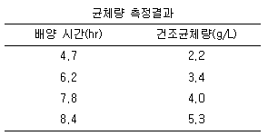
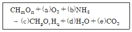
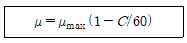
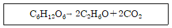
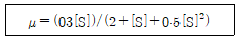

바이오화학제품제조기사 (2007-05-13 기출문제)
1과목: 미생물공학
1. Whey는 우유처리 공정의 부산물이다. 어떤 당이 가장 많이 함유되어 있는가?
- 과당 (fructose)
- 포도당 (glucose)
- 젖당 (lactose)
- 전분 (starch)
(정답률: 90%)

2. 제한효소(restriction endonuclease)는 무엇을 절단 하는가?
- protein
- DNA
- lipid
- RNA
(정답률: 100%)
3. 미생물에 의해 생산되는 다당류 중 물에 불용성이지만 물을 약 20배 정도 흡수할 수 있으며 이 물을 포함한 액을 가열하면 강고한 겔 상태로 되는 다당류는?
- curdlan
- dextran
- pullulan
- xanthan gum
(정답률: 90%)
4. 회분식(batch culture) 배양의 박테리아 생육곡선에서 총세포 농도는 일정한 값에 머무르며 2차 대사산물을 생산하는 시기는?
- 유도기(lag phase)
- 대수기(log phase)
- 정상기(stationary phase)
- 사멸기(death phase)
(정답률: 82%)
5. 발효조(jar fermenter)를 이용한 배양에서 교반이 미생물의 생육에 유용한 역할을 하는 경우가 아닌 것은?
- 배양액의 영양분을 고르게 분포시킨다.
- 배양액의 온도를 고르게 해준다.
- 미생물을 고르게 분산시킨다.
- 거품을 형성시킨다.
(정답률: 82%)
6. 연속배양에서 배지의 유입속도(feeding rate)는 250ml/h이고, 발효조 내 배양액의 부피는 1000ml 인 chemostat의 정상 상태에서 배양액의 세포농도는 20g/L 이었다. 이 때 균체(세포)의 생산성 (volumetric productivity)은 몇 g/Lㆍh 인가?
- 2
- 5
- 10
- 20
(정답률: 알수없음)
7. 빵ㆍ맥주 발효 등에 시용되는 미생물은 무엇인가?
- 대장균
- 방선균
- 효모
- 균사
(정답률: 알수없음)
8. 항생제의 일종인 페니실린의 대표적인 작용기작은?
- 세포벽의 생합성저해
- 지방대사에 작용
- 포도당 생성
- DNA복제 저해
(정답률: 90%)
9. 전분의 액화(liquefaction)에 가장 널리 이용하는 효소는?
- 알파 아밀라아제 (α-amylase)
- 글루코 아밀라아제 (gluco amylase)
- 베타 아밀라아제 (β-amylase)
- 글루코스 이소머라제 (glucose isomerase)
(정답률: 70%)
10. 플라스미드(plasmid)의 특성이 아닌 것은?
- 대부분의 박테리아에 존재하는 염색체 이외의 유전 물질이다.
- 염색체와 관계없이 독립적으로 복제가 가능하다.
- 환형의 DNA이다.
- 숙주세포의 생육에 필수적인 유전자로 구성된다.
(정답률: 93%)
11. 폐수의 생물화학적 산소요구량(BOD)의 의미는 무엇인가?
- 미생물이 폐수 중의 유기물질을 영양원으로 이용할 때에 소비되는 산소의 양
- 산화제 (과망간산 칼륨 등)를 첨가하여 폐수 중의 유기물과 반응 시킬때에 소비되는 산소의 양
- 폐수 중의 무기탄소를 제거한후에 완전히 연소시킬 때에 소비되는 산소의 양
- 미생물이 폐수 중의 유기질소를 모두 이용하기 위하여 소비되는 산소의 양
(정답률: 100%)
12. 벡터(vector)의 설명으로 적합한 것은?
- 유전자들의 집합체이다.
- 유전자의 운반체이다.
- 유전자를 절단할 수 있는 제한효소이다.
- 유전자가 발현되는 숙주이다.
(정답률: 알수없음)
13. 다음 염기 중 RNA 에만 있는 것은?
- 아데닌
- 시토신
- 구아닌
- 우라실
(정답률: 알수없음)
14. 효모(yeast)를 플라스크에서 회분 배양한 결과 지수증식기(expoenetial phase)에서의 균체량 측정치가 다음 표와 같았다. 이 효모의 비성장속도(specific growth rate)는 얼마인가?

- 0.22hr-1
- 0.74hr-1
- 0.22min-1
- 0.74min-1
(정답률: 50%)
15. Aspergillus niger를 이용한 구연산(citric acid) 발효시에는 배지 중 구리, 철, 코발트 이온의 농도가 최적 농도 이상일 때 구연산 생산성이 심각하게 감소한다고 알려져 있다. 이 사실을 고려했을 때, 구연산의 발효조 내부 재질로 가장 적당한 것은 다음 중 무엇인가?
- 강철(steel)
- stainless steel
- 유리가 코팅된 강철
- 청색유리가 코팅된 강철
(정답률: 알수없음)
16. 사상곰팡이의 배양액 중의 세포 농도를 정량하는 방법은?
- 헤모사이토미터(hemocytometer)
- 입자계수기(particle counter)
- 배양액의 탁도(turbidity)
- kjeldahl 질소 측정법
(정답률: 64%)
17. 세포건조 균체량 중 정량영양소가 차지하는 비율이 옳은 것은?
- 질소는 약 3%
- 산소는 약 8%
- 수소는 약 8%
- 인은 약 26%
(정답률: 82%)
18. Glucose를 fructose로 전환하는 효소는?
- glucose oxidase
- glucoamylase
- glucose isomerase
- invertase
(정답률: 알수없음)
19. 전분 가수분해 과정에서 맨 끝 비환원 말단으로부터 glucose 단위체를 떨어뜨리는 작용을 하고 α-1,6 글리코시딕 결합에도 작용하는 효소는?
- α-amylase
- β-amylase
- pullulanase
- glucoamylase
(정답률: 90%)
20. 단백질 농축에 대한 다음 설명 중 틀린 것은?
- 트리클로로아세트산(trichloroacetic acid, TCA)침전법을 이용하면 단백질의 변성을 막을 수 있다.
- 일정 농도의 암모늄설페이트(ammonium sulfate) 용액에서 단백질은 침전한다.
- 일정 농도의 아세톤 용액에 녹아있는 단백질은 실온에서 변성된다.
- 일정 농도의 폴리에틸렌글리콜(polyethylene glycol, PEG) 용액에서 단백질은 침전된다.
(정답률: 알수없음)
2과목: 배양공학
21. 스테로이드 지질계에 대한 설명으로 틀린 것은?
- 미생물을 이용하여 생산한다.
- 코르티손, 에스트로젠 등이 이에 속한다.
- 주로 화학적인 합성으로 완전합성을 한다.
- 4개의 고리형 판상 구조이다.
(정답률: 알수없음)
22. 다음 중 구연산 회로(TCA cycle)의 중간 산물이 아닌 것은?
- Citric acid
- Malic acid
- Fumaric acid
- Acetic aicd
(정답률: 알수없음)
23. 다음 중 미량영양소(micronutrient)에 해당하는 것은?
- 인산(PO43-)
- 마그네슘(Mg2+)
- 칼륨(K+)
- 나트륨(Na+)
(정답률: 알수없음)
24. 제한배지와 복합재지에 대한 설명으로 옳은 것은?
- 제한 배지는 포도당, (NH4)2SO4, KH2PO4, MgCl2이 기본적으로 포함되어있다.
- 복합배지는 화학조성을 알고 있는 화합물에 생장인자, 비타민, 미량원소를 복합적으로 혼합한 조성이다.
- 제한배지는 발효 제어와 높은 균체 및 산물 수율ㆍ정제의 용이성 때문에 산업적으로 많이 이용된다.
- 복합배지는 결과의 재현성이 좋고 생장 수율이 높아서 실험실에서 배양 연구에 많이 이용된다.
(정답률: 62%)
25. 비성장속도가 제한 기질의 농도에 대해 Monod식으로 표현된다고 가정할 때, 최대비생장속도 Um는 0.25hr-1, 포화 상수는 2.0g/L, 기질수율 Yx/s는 0.5인 미생물을 이용하여 키모스탯연속배양을 할 경우에 유입되는 제한기질의 농도가 20g/L라면 최대 세포생산성을 얻기 위한 희석속도는? (단, 세포의 사멸속도와 세포외 산물 생성은 무시된다.
- 0.175hr-1
- 0.185hr-1
- 0.195hr-1
- 0.2⑤hr-1
(정답률: 64%)
26. 재조합 단백질을 생산할 때 숙주로 미생물인 대장균을 사용할 경우에 장점에 해당하는 것은?
- 대부분의 목적 단백질을 세포 밖으로 배출한다.
- 목적 단백질이 내포체를 이루는 경우가 거의 없다.
- 생장속도가 빠르고, 고농도 배양이 가능하다.
- 고농도 축적에도 열 충격 반응을 유발하지 않는다.
(정답률: 92%)
27. 다음 중 식품을 멸균하고자 할 때 저온 멸균법과 고온 멸균법 중 어느 것이 유리한지를 가리기 위해 가장 필요한 정보는 무엇인가?
- 식품의 함수율과 미생물 포자 형성 여부
- 식품에 존재하는 주요 영양성분의 열안정성과 미생물 사멸 속도의 온도 의존성
- 식품 및 미생물의 열전도도
- 식품 및 미생물의 함수율
(정답률: 100%)
28. 연속식 반응기에서 희석 속도가 0.4hr-1이고, 비생산속도가 0.2hr-1일 때 반응기의 세포 농도가 10g/L이면 출구로 나오는 생산물의 농도는 몇 g/L인가?
- 5
- 10
- 15
- 20
(정답률: 70%)
29. 다음 중 주로 토양에서 서식하며 균사형태로 자라는 미생물은?
- 고초균
- 대장균
- 방선균
- 빵효모
(정답률: 91%)
30. 세포배양용 배지에 이용되는 킬레이팅제 (chelating agent)에 대한 설명으로 옳지 않는 것은?
- 금속이온과 결합할 수 있는 리간드(ligand)라 불리는 특정기를 가지고 있다.
- 난용성 금속 이온과 결합하여 수용성 화합물을 형성한다.
- 올레익산, 스테롤 등이 주성분으로 킬레이팅제의 효과를 높이는 역할을 한다.
- EDTA, 타이로신, 시스틴 등이 킬레이팅제로 사용된다.
(정답률: 73%)
31. 미생물의 호기성 배양시 대부분의 경우에 용존산소농고가 제한되어 세포증식이 억제된다. 이를 해결하기 위한 방법으로 가장 거리가 먼 것은?
- 방해판(baffle)이 설치된 진탕 플라스크를 사용하여 표면통기 (surface aeration)을 증가시킨다.
- 미생물의 펠렛(pellet)화를 막기 위해 분산제를 첨가하여 점도를 올린다.
- 교반식 발효조에서 스파저(sparger)를 사용하여 공기를 주입한다.
- 공기 방울을 작게 분산시키기 위해 교반 속도를 적절히 조절한다.
(정답률: 알수없음)
32. 동물세포 배양시 고려하여야 할 사항에 대한 설명 중 틀린 것은?
- 교반에 의한 전단응력의 발생으로 세포 분해가 일어날 수 있으므로 주의하여야 한다.
- pH, 온도 등과 같은 환경에 대한 세심한 제어가 필요하다.
- CO2가 보강된 공기의 공급이 필요하다.
- 젖산, 암모늄 같은 생산물의 농축 등이 배양과정에서 이루어져야 한다.
(정답률: 알수없음)
33. 다음 다량 영양소에 대한 설명 중 틀린 것은?
- 황은 건조균체량의 약8%를 차지하며 미토콘드리아의 성분이다.
- 질소는 단백질과 핵산의 형태로 세포생장에 이용된다.
- 인은 핵산에 존재한다.
- 탄소화합물은 세포의 탄소와 에너지의 주요 공급원이다.
(정답률: 알수없음)
34. 최적생장 pH의 범위에 대한 설명 중 가장 거리가 먼 것은?
- 효모의 경우 최적 pH가 9~10의 범위이다.
- 사상균의 경우 최적 pH가 3~6의 범위이다.
- 식물세포의 경우 최적 pH가 5~6의 범위이다.
- 동물세포의 경우 최적 pH가 6.5~7.5의 범위이다.
(정답률: 100%)
35. 무혈청 배지 이용의 장점이 아닌 것은?
- 배지의 가격을 줄일 수 있다.
- 결과 및 생산의 재현성이 증대되고 오염을 줄일 수 있다.
- 생산물 정제시 가능성 있는 문제들을 제거할 수 있기 때문에 생산물 분리정제 공정이 용이하다.
- 모든 세포 계통이 적응 될 수 있고 단백질 제재 산물의 생산성이 증대된다.
(정답률: 80%)
36. 세포가 요구하는 영양소중 가장 일반적으로 요구되는 미량원소로 나열된 것은?
- Fe, Zn, Mn
- Cu, Co, Al
- Ca, Na, Si
- Ni, Se, Br
(정답률: 100%)
37. 물과 이산화탄소 외에는 아무런 세포외의 산물이 생성되지 않는 다음의 생전환 반응에서 호흡률을 나타내는 것은?

- a/e
- e/a
- a/e
- c/a
(정답률: 알수없음)
38. 지수 생장기에서 미생물의 질량을 두배로 하는데 1시간이 걸린다면 비성장속도는 얼마인가?
- 0.347hr-1
- 0.693hr-1
- 1.040hr-1
- 1.386hr-1
(정답률: 알수없음)
39. 반복유가식배양(repeated fed-batch culture)에 대한 설명으로 가장 옳은 것은?
- 일부 유가식 운전에서는 반응기의 부피가 한정되어 있기 때문에 배양액의 일부를 적절한 시간 구간에서 제거하여 주는 방법이다.
- 유가식 배양을 수행하다가 일시적으로 회분식으로 전환한 후 다시 유가식 배양을 반복하는 배양 방법을 말한다.
- 세포는 배양기 내부에 유지하도록 하면서 배지만을 공급하고 제거하는 배양법이다.
- 불연속적으로 반복하여 배지를 공급하는 방법이다.
(정답률: 알수없음)
40. 다음 중 세포가 새로운 환경에 적응하는 기간으로 세포에서 새로운 구성성분의 합성이 이루어지는 시기에 해당하는 것은?
- 지연기
- 대수기
- 정체기
- 사멸기
(정답률: 알수없음)
3과목: 생물반응공학
41. 효소반응이 Michaelis-Menten 속도식을 따를 때, 반응 속도에 대한 기질농도의 영향에 대한 설명으로 가장 옳은 것은?
- 기질농도가 증가하면 반응속도가 증가한다.
- 기질농도가 증가하면 반응속도가 감소한다.
- 기질농도가 무관하게 반응속도는 계속 증가한다.
- 기질농도가 증가함예 따라 반응속도가 증가하지만 어느 한계값 이상에서는 기질농도에 관계없이 일정하다.
(정답률: 100%)
42. 다음 중 담체 결합법에 의한 효소 고정화에 관한 설명 중 옳은 것은?
- 공유결합법, 가교법, 포괄법, 외삽법 등이 이에 속한다.
- 효소를 gel의 미세한 격자에 포함시켜 고정화한다.
- 고분자 기질보다는 저분자 기질에 대한 효소활성이 더 많이 감소된다.
- 담체의 입체적 장애에 의해서 기질 분자의 접근이 방해되어 효소 활성 저하의 요인이 된다.
(정답률: 알수없음)
43. 연속식 멸균에 관한 설명으로 가장 옳은 것은?
- 점액질이 높은 배지의 멸균에 적합하다.
- 대규모보다는 소규모 형태의 멸균에 적합하다.
- 높은 멸균율을 가져 유리하나 제어하기가 어렵다.
- 회분식 멸균보다 고온에서 짧은 시간 노출됨으로 배지성분의 변성을 막을 수 있다.
(정답률: 80%)
44. 멸균 전 생균수가 103개 였으나, 121℃에서 2분간 멸균한 후의 생균수는 10개 이었다. 사멸속도상수 k(min-1)는 얼마인가?
- 0.02
- 1
- 1.15
- 2.30
(정답률: 알수없음)
45. 효소 A와 효소 B의 기질 S에 대한 Michaelis-Menten 상수 값이 각각 0.1과 0.2이다. 효소 A와 효소 B의 기질 S에 대한 친화력의 과계를 옳게 나타낸 것은? (단, RA는 효소 A의 친화력, RB는 효소 B의 친화력이다.)
- RA >RB
- RA < RB
- RA = RB
- RA = RB
(정답률: 알수없음)
46. 회분식 배양기에서 배양 시작시 기질 농도가 5g/L이고 세포 농도가 1g/L일 때 기질에 대한 세포 수율계수가 0.4일 경우, 얻을 수 있는 최대 세포 농도는 몇 g/L인가?
- 2
- 3
- 5
- 6
(정답률: 75%)
47. 생물 반응기의 여러 가지 대규모화 방법에 있어서 일정한 KLㆍa가 일반적으로 의미하는 것은? (단, KL은 물질전달 속도상수이며 a는 접촉면적이다.)
- 일정한 전단응력
- 일정한 혼합시간
- 일정한 산소전달속도(OTR)
- 기하학적으로 유사한 흐름 유형
(정답률: 알수없음)
48. 효소의 활성도와 관련한 설명으로 옳은 것은?
- 효소는 금속촉매와 같이 고온에서 온도의 증가에 따라 활성이 증가하는 경향을 보인다.
- 효소의 활성은 용액의 pH가 증가할수록 활성도도 증가한다.
- 효소 활성의 반감기는 반응온도가 증가할수록 길어진다.
- 효소활성에 대한 최적pH와 최적온도는 효소의 종류마다 다르다.
(정답률: 100%)
49. 생장곡선의 지연기를 최소화시킬 수 있는 방법이 아닌 것은?
- 접종 전에 세포들을 생장 배지에 적응시킨다.
- 접종량을 줄인다.
- 영양배지를 최적화시킨다.
- 세포들이 젊고 활성이 있게 한다.
(정답률: 알수없음)
50. 기체의 멸균을 위해서 균일하고 작은 구멍이 있는 막을 사용해 체질(sieving)효과를 이용하는 것은?
- 증기 멸균기
- 크로카토그래피 멸균기
- 표면여과기
- 흡착멸균기
(정답률: 알수없음)
51. 교반탱크 반응기 내에서 기체분산에 가장 중요한 역할을 하는것은?
- 분사기(sparger)
- 임펠러(impeller)
- 원환(annulus)
- 내부 코일
(정답률: 알수없음)
52. 발효기의 설계에 있어서 일반적인 O-링과 가스켓 사용에 대한 설명으로 가장 옭은 것은?
- 발효기의 큰 구멍에는 O-링을, 작은 구멍에는 가스켓을 사용하여 새는 것을 방지한다.
- 발효기의작은 구멍에는 O-링을, 큰 구멍에는 가스켓을 사용하여 새는 것을 방지한다.
- 구멍의 크기와 상관없이 O-링을 사용한다.
- 구명의 크기와 상관없이 가스켓을 사용한다.
(정답률: 알수없음)
53. 고정화 효소 반응에서 Damkoehler 상수 Da에 대한 설명으로 틀린 것은?
- Da ≫ 1 이면 기질확산속도에 의해 효소전환속도는 제한을 받는 것이다.
- Da ≒ 1 이면 반응과 확산저항이 비슷하게 된다.
- 기질확산속도와 효소반응속도의 곱의 값으로 나타내어진다.
- Da ≪1 이면 효소반응속도에 의해 효소전환속도는 제한을 받는 것이다.
(정답률: 알수없음)
54. 세포 고정화에 이용되는 지지체가 갖추어야 할 조건과 가장 거리가 먼 것은?
- 가능한 한 단단하여야 한다.
- 세포와 결합력이 커야 한다.
- 입자는 충분히 크고 활성이 좋아야 한다.
- 높은 부하량을 가져야 한다.
(정답률: 55%)
55. 다음 중 대표적인 고상발효(solid state fermentation)인 곡자공정(koji process)에 대한 설명 중 틀린 것은?
- 입자의 크기는 CO2와 산소의 교환이 잘 이루어지도록 충분히 커야 한다.
- 곡자 발효는 보통 통기와 교반으로 습도가 조절되는 호기 환경에서 이루어진다.
- 최소 허용수분함량 이하에서는 미생물 활성이 억제되고 최적수분함량은 약 40±5%이다.
- 입자의 공극률은 입자의 부피에 대한 표면적비를 크게 하기 위하여 전처리에 의해 증가된다.
(정답률: 알수없음)
56. 회분식 호기성 발효기 또는 생물반응기를 교반 혼합 방식에 따라 나눌 때 기본적인 형태에 속하지 않는 것은?
- stirred tank reactor
- bubble column reactor
- fluidized bed reactor
- airlift looped reactor
(정답률: 알수없음)
57. 다음 중 생물반응기의 계측기구가 갖추어야 할 조건이 아닌 것은?
- 무균성 유지
- 내구성
- 안정성
- 아날로그 신호
(정답률: 알수없음)
58. Bacillus spore 4.2x1012개인 배지용액을 121℃에서 15분간 살균한 결과 1.3x106개의 spore가 살아남았다. 이 Bacillus 포자의 십진감소시간(decimal reduction time) 값은 약 얼마인가?
- 2.134min
- 2.304min
- 2.547min
- 2.728min
(정답률: 알수없음)
59. Michaelis-Menten 속도식의 상수를 실험에 의하여 구하는 방법으로 이중역수(double-reciprocal) 도표를 사용할 경우 직선의 기울기와 y축 절편을 순서대로 옳게 나타낸 것은? (단, Km은 Michaelis-Menten 상수이며, Vm은 최대반응속도를 나타낸다.)
- Km, Vm
- Vm/Km, 1/Vm
- 1/Vm, Km
- Km/Vm, 1/Vm
(정답률: 알수없음)
60. 다음 기체의 여과에 관련된 기작 중 심층여과기(depth filter)와 관련이 가장 적은 것은?
- 직접적인 차단
- 정전기적 효과
- 관성효과
- 열적지연 효과
(정답률: 알수없음)
4과목: 생물분리공학
61. 젤여과(gel filtration) 크로마토그래피 칼럼에 적당한 완충 용액 을 흘리면서 성분 A와 B로 구성된 혼합물을 일정량 주입하였을 경우 다음 설명 중 옳지 않는 것은? (단, 분자량과 크기는 모두 성분 A보다 성분 B가 크다.)
- 컬럼으로부터 A가 먼저 배출된다.
- 분자들의 칼럼내의 이동속도는 젤여과 매질의 세공(pore) 크기에 대한 분자크기 정도에 의존한다.
- A와 B의 크기 차이가 클수록 분리 해상도가 높아진다.
- 젤여과 매질은 분리하려는 성분들과 화학적·물리적 상호 작용이 적은 물질을 사용하는 것이 일반적이다.
(정답률: 알수없음)
62. 다음 중 소수성 아미노산이 아닌 것은?
- 페닐알라닌(phemylalanine)
- 트립토판(tryptophan)
- 루신(leucine)
- 라이신(lysine)
(정답률: 알수없음)
63. 한 단백질의 관형 크로마토그래피 용리에 있어서 체류시간(retention time)과 피크 너비(peak width)가 각각 24분, 0.4분 일 때, 이관의 이론단수(Number of Theoretical Unit)는?
- 576
- 5760
- 57600
- 576000
(정답률: 59%)
64. 세포파쇄(cell disruption)에 사용되는 French Press가 하는 역할과 가장 관계가 깊은 것은?
- 원심분리
- 여과
- 추출
- 기계적 균질화
(정답률: 알수없음)
65. Van Deemter 식은 다음의 어느 관계를 나타내는가?
- 단 높이와 유속과의 관계
- 단의 수와 유량과의 관계
- 포화도와 유속과의 관계
- 분배계수와 포화도의 관계
(정답률: 알수없음)
66. 주어진 용질에 대한 막의 배제계수(rejection coefficient)가 0.75이다. 모액(feed solution) 쪽의 용질농도가 0.2M일 때, 여액(filtrate) 쪽의 용질 농도는?
- 0.01M
- 0.03M
- 0.⑤M
- 0.07M
(정답률: 알수없음)
67. 황산암모늄과 같은 염을 첨가하여 단백질 수용액의 이온 세기를 증가시키는 것은 어떤 분리 기술을 이용한 것인가?
- 여과
- 전기영동
- 추출
- 침전
(정답률: 알수없음)
68. 다음 생물분리공정 중 일반적으로 가장 마지막 단계에서 사용 되는 공정은?
- 생성물 건조
- 세포파쇄
- 가용성생성물의 분리
- 불용성 물질의 분리
(정답률: 93%)
69. 다음 중 Darcy의 법칙과 가장 관련이 깊은 것은 무엇인가?
- 여과
- 증발
- 추출
- 건조
(정답률: 70%)
70. 다음 중 승화현상을 이용한 건조기는?
- tray dryer
- spray dryer
- freeze dryer
- tumble dryer
(정답률: 알수없음)
71. 다음중 관형 원심분리기가 갖는 장점이 아닌 것은?
- 높은 원심력
- 우수한 수분제거 능력
- 큰 케이크 용량으로 효율 저하 없음
- 관의 분해가 용이
(정답률: 알수없음)
72. 다음 아미노산 중 황원소를 포함하는 것은?
- 리신
- 시스테인
- 히스티딘
- 티로신
(정답률: 알수없음)
73. 압력의 차이를 이용해서 비등방성 구조의 막으로 분자량 약 2,000~500,000 정도의 단백질을 분리해 내는 공정은?
- 침전
- 역마이셀
- 한외여과
- 원심분리
(정답률: 77%)
74. 다음 중 대장균과 같은 박테리아의 전형적인 크기에 가장 가까운 것은?
- 10~20nm
- 1~4um
- 50~100um
- 100~300um
(정답률: 80%)
75. 페니실린 발효액으로부터 이소아밀아세테이트(isoamylacetate)를 이용하여 페니실린을 추출하려 한다. 100ml의 발효액에 10ml의 아소아밀아세테이트를 섞어 pH3에서 충분히 교반시킨 후 상분리를 거쳐 이소아밀아세테이트상과 물상내의 페니실린 농도를 측정하였더니 각각 5g/L와 0.2g/L이었다. 이 추출계에 서의 분배계수(partition coefficient)는?
- 1
- 2
- 10
- 25
(정답률: 알수없음)
76. 알코올 발효시 동시분리 기술을 이용하면 알코올의 생산성이 증가한다. 알코올이 미생물 생장에 미치는 영향이 다음 식을 따른다고 하면 알코올 농도가 10g/L일 때 세포 생장 속도는 알코올 농도가 50g/L일 때 세포생장 속도의 몇 배인가? [단, μ는 세포생장속도, μmax는 최대 생장속도, C는 배지 내의 알코올의 농도(g/L)이다.]

- 0.2배
- 2배
- 3배
- 5배
(정답률: 알수없음)
77. α-아미노산의 α-탄소에 일반적으로 결합되어 있는 기능기가 아닌 것은?
- -NH2
- -H
- -SH
- -COOH
(정답률: 87%)
78. 다음의 생물기초물질 중 물에 녹지 않는 소수성을 띤 생체물질로서 세포막과 같은 비수성 생체계에 특히 많이 검출되는 것은?
- 지질(lipids)
- 탄수화물(carbohydrates)
- 단백질(proteins)
- 핵산(nucleic acids)
(정답률: 93%)
79. 다음 중 전분액화효소에 의해 절단되는 결합으로 포도당 분자가 아밀로오스를 이루는 결합에 해당하는 것은?
- α-1,4 glycosidic 결합
- α-1,6 glycosidic 결합
- β-1,4 glycosidic 결합
- β-1,6 glycosidic 결합
(정답률: 알수없음)
80. 발효공정과 분리공정을 결합하는 것과 같은 생물공정 결합의 장점이 아닌 것은?
- 생성물 저해를 감소시켜 반응속도 증가
- 원하는 생성물에 대한 향상된 선택성
- 원래 세포외 생성물을 세포내 생성물로 전환
- 생성물의 변성방지
(정답률: 알수없음)
5과목: 생물공학개론
81. pKa1 = 2.34, pKa2 = 9.6인 아미노산의 등전점은?
- 2.34
- 5.97
- 9.6
- 11.94
(정답률: 알수없음)
82. 포도당을 이용한 알코올 발효가 다음과 같이 진행될 때 포도당 180g으로 생성되는 알코올의 양은 몇 g인가?

- 24
- 46
- 88
- 92
(정답률: 알수없음)
83. 공기의 조성이 mol 퍼센트로 질소 78.2%, 산소 19.2%, 이산화탄소 2.6% 일 때 공기의 평균분자량은 약 얼마인가?
- 22.4
- 25
- 29
- 32
(정답률: 알수없음)
84. 10-2N NaOH 수용액의 pH는?
- 2
- 8
- 12
- 13
(정답률: 75%)
85. 비성장속도(specific growth rate)가 1.386/day 일 때 이 세포의 배가시간(double time)은?
- 0.5day
- 1.0day
- 1.5day
- 2.0day
(정답률: 60%)
86. 1기압 25℃에서 물에 용해되는 최고 산소량은 약 몇 mg/L 인가?
- 0.0814
- 0.814
- 8.14
- 81.4
(정답률: 알수없음)
87. 절대압에 대한 설명으로 옳은 것은?
- 게이지로 측정한 압력
- 게이지압과 대기압의 차
- 게이지압과 대기압의 합
- 절대 온도와 압력과의 합
(정답률: 알수없음)
88. 자연대류가 있는 경우의 Nusselt 수에 대한 영향이 큰 무차원수에 해당 하는것은?
- Peclet 수
- Graetz 수
- Prandtl 수
- Grashof 수
(정답률: 50%)
89. 순수한 에탄올의 밀도는 0.789g/ml 일 때 순수한 에탄올의 몰농도는 약 얼마인가?
- 17.2M
- 27.2M
- 37.3M
- 47. 4M
(정답률: 알수없음)
90. 압력강하를 일정하게 유지하는데 필요한 유로의 면적 변화를 측정하여 유량을 구하는 기구는?
- 벤튜리미터
- 오리피스미터
- 로터미터
- 피토관
(정답률: 알수없음)
91. 다음과 같이 성장이 기질 저해를 받는 미생물이 보일 수 있는 비성장속도의 최대값은? [단, μ는 비성장속도(hr-1), [S]는 기질농도(g/L)이다.]

- 0.1hr-1
- 0.15hr-1
- 0.2hr-1
- 0.3hr-1
(정답률: 알수없음)
92. 멸균공정에 있어서 주어진 온도에서 살아있는 세포나 포자의 수를 원래 숫자의 10%로 줄이는데 필요한 시간을 나타내는 것은?
- L value
- Z value
- F0 Value
- D value
(정답률: 73%)
93. 약사법에 의하면 제조관리 부서 책임자가 관리해야 할 사항이 아닌 것은?
- 제품 시험 분석에 관한 시험지시서 작성 및 시험 진행 상황 점검·확인
- 제품표준서, 제조관기기준서 및 제조위생관리기준서 비치·운영
- 제조지시서 작성 및 작업 진행 점검·확인
- 원료·자재 및 완제품의 보관관리 담당자 지정
(정답률: 67%)
94. 약사법에 의하면 관계법령에 규정된 것을 제외하고는 모든 업무처리에 관한 기록을 유효기한 또는 사용기한 만료 후 몇 년간 보관해야 하는가?
- 1년
- 2년
- 3년
- 5년
(정답률: 54%)
95. 다음 중 비어(Beer)의 법칙은? (단, A는 흡광도, ɛ는 몰흡광계수, c는 용액의 농도, L은 셀의 길이, T는 투과도를 나타낸다.)
- T = ɛx c x L
- A = ɛx c x L
- A = ɛx L / c
- T = ɛx L / c
(정답률: 70%)
96. 다음 중 유전자로부터 유전정보를 단백질 합성기구로 전달하는 RNA는?
- mRNA
- rRNA
- tRNA
- primer RNA
(정답률: 알수없음)
97. 다음 중 DNA를 구성하는 구성요소가 아닌 것은?
- 인산
- 디옥시리보오스
- 염기
- 리보오스
(정답률: 90%)
98. 다음 중 GC(Gas Chromatography)의 장치에서 검출기에 해당 하지 않는 것은?
- TCD(Thermal Conductivity Detector)
- RID(Refractive Index Detector)
- ECD(Elcetron Capture Detector)
- FID(Flame Ionization Detector)
(정답률: 알수없음)
99. 분열시 모든 세포가 20개의 플라스미드를 가지고 있는 경우, 플라스미드 불포함세포가 발생할 확률은 약 얼마인가? (단, 세포분열시 플라스미드가 무작위로 분배된다고 가정한다.)
- 9.5 x 10-7
- 1.9 x 10-6
- 5.28 x 105
- 1.1 x 106
(정답률: 80%)
100. 벨리데이션(Validation)의 대상 중 4M에 해당하지 않는 것은?
- Man
- Market
- Materials
- Method
(정답률: 73%)